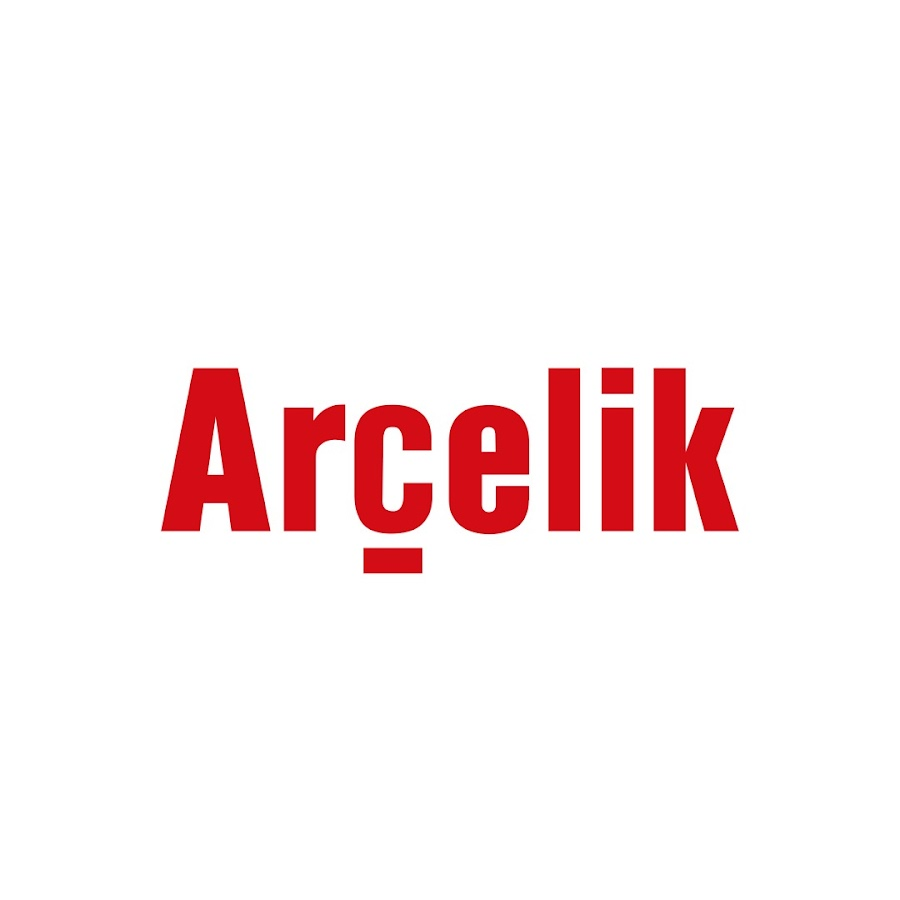

Selected Projects
Machine Learning Algorithms from Scratch
Stiftung Universität Hildesheim, Germany | Spotlight [GitHub]
- Developed and formulated SLE algos (Gaussian elimination, QR), optimization algos (GD, Newton, SGD, CD), step-length algos (backtracking, bold-driver, RMSProp), forward/backward search with AIC/BIC, grid/randomized search with K-Fold,regularization (L1, L2, Elastic Net, Dropout), losses/fit (MSE, crossentropy, case weights, MCR, Information gain)
- Developed and designed Linear/logistic regression, LDA/QDA, KNN (vanilla, LSH), decision trees (with gradient boosted), MLP, SVM, Naïve Bayes, K-Means, Gaussian Mixtures, NLP (TF-IDF, BOW, CBOW model, N-Gram language model).

Credit Risk Modelling
MaxDecisions Inc., USA | Spotlight [Presentation, GitHub]
- Prepared the dataset for machine learning models by overviewing Weight of Evidence (WoE), scaling noncategorical variables, and oversampling the data to address class imbalance.
- Implemented ML algorithms including SVM, XGBoost, and DL to predict Probability of Default for clients.
- Compared the performance of the models using metrics such as K-S scores, ROC curves, and confusion matrices on the test and validation datasets, and produced rank order tables to evaluate the models’ effectiveness.
- Collaborated effectively with other team members and stakeholders, including data scientists, engineers, and business leaders, to deliver high-quality risk management solutions to clients.
- Tech stack: Python, Scikit-Learn, TensorFlow, Keras
Credit Default Prediction
- Conducted extensive data analysis on a dataset of 5M+ rows, leveraging time-series data and advanced feature engineering techniques to create over 800 features, resulting in a significant improvement in model performance.
- Utilized a diverse ensemble of machine learning models, including LGBM-DART, Logistic Regression, Support Vector Machines (SVM), Neural Networks (NN), and Bagging, to build a robust prediction model. This culminated in achieving an impressive custom metric score of 0.803.
- Tech stack: Python, Scikit-Learn, Optuna, TensorFlow, Keras.

Dishwasher Plant Material Warehouse Improvement Study
Arcelik Inc., Turkey | Spotlight [Presentation, Report/Thesis]
- Led a warehouse improvement project that involved relocating departments to optimize flow value and increase capacity by 2800 ft2, using MATLAB to assess and visualize the changes.
- Improved logistics efficiency by optimizing the path for forklift trucks, reducing wait time by 20% and enhancing productivity.
- Boosted revenue by 10% by designing and implementing wedges for coil steels, reducing damage and waste.
- Authored a comprehensive 40-page academic report detailing the project methodology, results, and recommendations for future improvements with a team of seven.